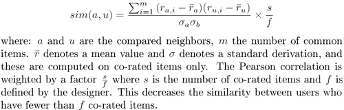

main.domain.collaborativeRecommender
Class LMSCollaborativeRetrievalMethod
java.lang.Object
 jcolibri.extensions.recommendation.collaborative.CollaborativeRetrievalMethod
main.domain.collaborativeRecommender.LMSCollaborativeRetrievalMethod
jcolibri.extensions.recommendation.collaborative.CollaborativeRetrievalMethod
main.domain.collaborativeRecommender.LMSCollaborativeRetrievalMethod
public class LMSCollaborativeRetrievalMethod
- extends jcolibri.extensions.recommendation.collaborative.CollaborativeRetrievalMethod
This method returns cases depending on the recommendations of other users.
It uses a PearsonMatrix Case base to compute the similarity among neighbors.
Then, cases are scored according to a rating that is estimated using the
following formula:

Note: Some changes were necessary to make this case base evaluable with the
LMSEvaluator.
See:
J. Kelleher and D. Bridge. An accurate and scalable collaborative
recommender. Arti�cial Intelligence Review, 21(3-4):193-213, 2004.
- Version:
- 1.1
- Author:
- Tell
Mueller-Pettenpohl
| Methods inherited from class jcolibri.extensions.recommendation.collaborative.CollaborativeRetrievalMethod |
getRecommendation |
| Methods inherited from class java.lang.Object |
clone, equals, finalize, getClass, hashCode, notify, notifyAll, toString, wait, wait, wait |
NORMALIZE_FACTOR
public static final int NORMALIZE_FACTOR
- See Also:
- Constant Field Values
LMSCollaborativeRetrievalMethod
public LMSCollaborativeRetrievalMethod()
getRecommendation
public static java.util.Collection<jcolibri.method.retrieve.RetrievalResult> getRecommendation(LMSPearsonMatrixCaseBase cb,
jcolibri.cbrcore.CBRQuery query,
int kUsers)
- Returns a list of cases scored following the collaborative recommendation
formulae.
- Parameters:
cb - is the case base that contains the casesquery - is the query to get the recommendation for.kUsers - defines the number of users taken into account to score the
cases.
findRating
private static double findRating(LMSPearsonMatrixCaseBase cb,
int descId,
int solId)